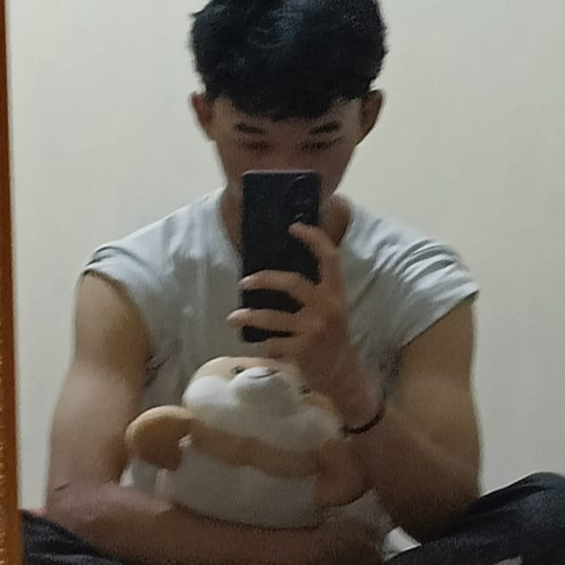

Tentang Saya
Seorang mahasiswa aktif di Institut Teknologi PLN yang penuh semangat dan antusiasme. Saya memiliki hobi membaca dan mendengarkan musik, yang selalu memberikan inspirasi dan relaksasi di tengah kesibukan akademik. Selain itu, saya sangat tertarik dengan dunia data science, di mana saya terus belajar dan mengembangkan keterampilan untuk menganalisis dan menginterpretasi data. Dengan kombinasi minat ini, saya berusaha untuk selalu berpikir kritis dan kreatif dalam setiap aspek kehidupan.
Karya Saya